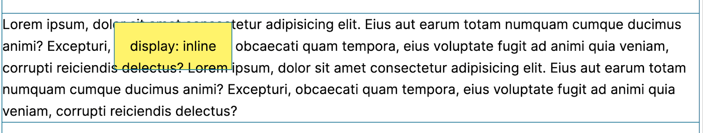
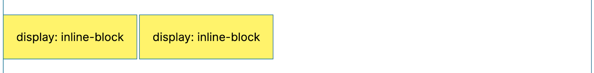
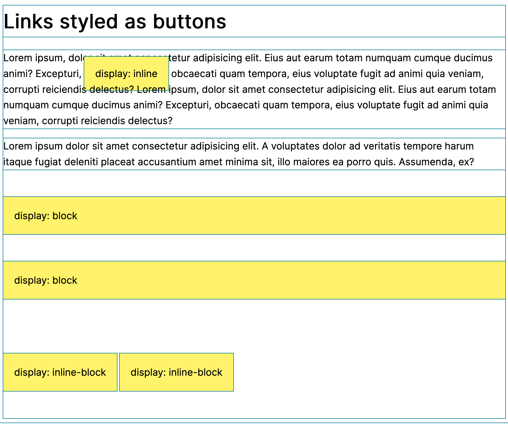

To understand the difference between inline and inline-block it helps to first understand the difference in behaviour between inline HTML elements and block HTML elements.
By default, most HTML elements display as blocks. That means:
- They stack one on top of the other
- They force a new line of content
- Their default width is 100% of their parent
- You can apply padding and margins to their top and/or bottom
Some examples of block elements are:
- Paragraphs
- Headings
- Sections
- Divs
If you think about it, this is the kind of behaviour you would want and naturally expect from these elements. A paragraph wouldn't be a paragraph if it didn't start on a new line.
Inline elements, on the other hand,include HTML tags like:
- Links
- Italic font
- Bold font
- Spans
They don't automatically start a new line. They just continue along in line with what came before them. Again, this makes sense. You wouldn't want to be forced to start a new line every time you added a link to your text or whenever you decorated your text with bold or italic fonts.
The thing about inline elements is that you can't give them a height, or add margins or padding to their top or bottom. In many cases, this is exactly what you'd want because if you added height, padding or margin to the top/bottom of your links or italic text in the middle of a paragraph, you would cause trouble. You'd end up with ugly blank space around the words in the rest of that line.
But, sometimes you really do want to do things to an inline element
that will change its height. One good example is styling a link as a
button. Remember a link's natural state is as an inline element, so
how can we add padding and turn it into a button? By explicitly
setting its display property to
display: inline-block. inline-block allows
you do things to inline elements that you could usually only do with
block elements – like add padding top and bottom to make a button. The
useful thing is your inline-block elements still remain
in line. This allows you to put two links styled as buttons side by
side.
Here are some code examples to show the differences. In this first
example, I've styled a link as a button, without remembering to set
its display to display: inline-block. Here's my code.
display:inline
CSS
Note this same CSS is used in all of the examples. The only difference in each case are the utility classes applied in the HTML.
.btn {
margin-top: 50px;
margin-bottom: 50px;
padding: 20px;
background-color: hsl(55, 100%, 71%);
text-decoration: none;
color: black;
}
.inline-block {
display: inline-block;
}
.block {
display: block;
}
* {
outline: 1px solid hsl(192, 95%, 31%);
}
HTML
<a class="btn" href="#">display: inline</a>
display:inline.

display: block
Now, here's what would happen if we set the display on our
button-styled links to display: block. Notice how the
buttons have a width of 100% of their parent element. Also, notice how
they stack one on top of the other.
HTML
<a class="btn block" href="#">display: block</a>
<a class="btn block" href="#">display: block</a>
display: inline-block
If you are styling links as buttons, it is most likely that you want them to be able to sit one alongside the other, like this.
Here's the code you'd use to achieve this.
HTML
<a class="btn inline-block" href="#">display: inline-block</a>
<a class="btn inline-block" href="#">display: inline-block</a>
Here are all three display types again so that you can compare them side by side.
